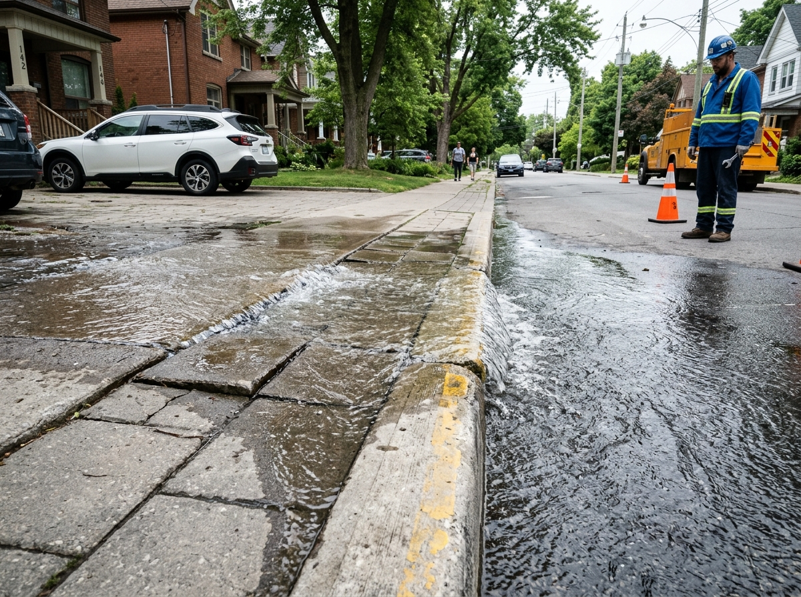
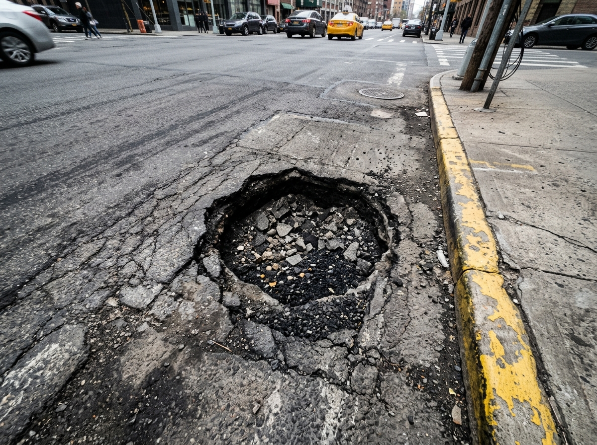
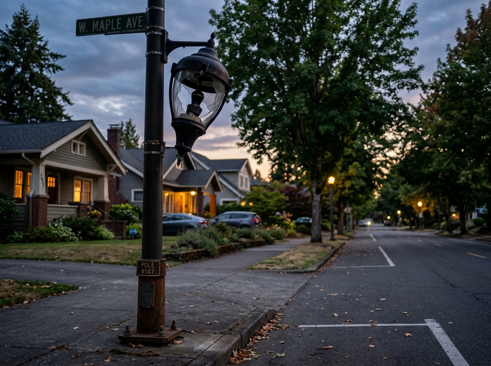
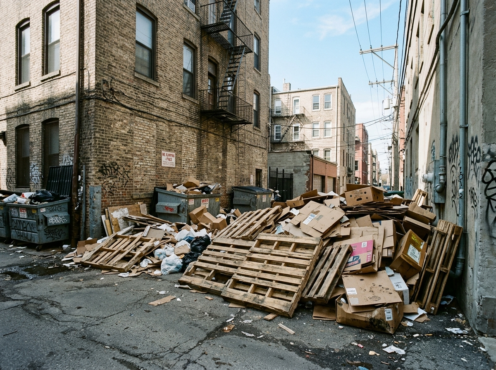

See something broken? Snap it. We push the city to fix it.
Potholes, dark streetlights, PAM water leaks, or trash piles. Drop photos, track fixes like a food delivery order, and keep authorities accountable.
48 reports today
·
194 fixed this week
·
2.3 days avg response
01
Snap & Tag
Take a photo or quick audio of the issue and provide the street location.02
Report Review
Our team verifies evidence and routes directly to the responsible bureau.03
Field Fix
Dispatched technicians do the repairs under strict public SLA windows.04
Proof & Close
Before/after photos published openly so everyone sees the resolution.Recent Community Reports
Verified reports lodged in Jakarta and surrounding regions

PAM clean drinking water pipeline burst flooding sidewalk in front of Cipete Raya MRT
Jl. Fatmawati Raya No. 42 (depan Stasiun MRT Cipete Raya)

Severe 15cm asphalt cavity in TransJakarta corridor causing motorbike rim damage
Jl. Gatot Subroto Kav. 38 (depan Menara Mulia, Jalur TransJakarta)

Complete PJU streetlight outage spanning 300 meters along residential corridor
Jl. Tebet Barat Dalam Raya No. 24, RT 08 / RW 03

Illegal household trash accumulation obstructing drainage at Kali Krukut Kemang
Kampung Kemang, RT 02 / RW 01 (bantara Kali Krukut)